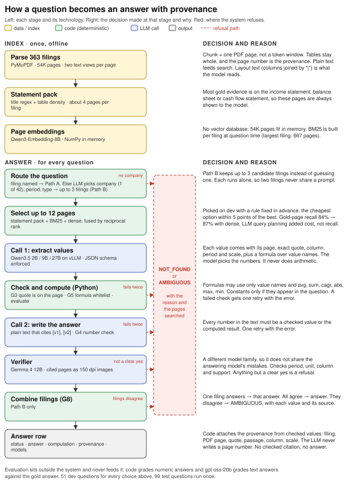

Answers questions about SEC filings and shows the page and quote behind every answer. If it cannot check the evidence, it does not answer.
Each run replays a recorded run of the real system (Qwen3.5-9B answering, Gemma 4 12B verifying, on Georgia Tech's ICE GPUs). No model runs in your browser. The steps appear in the order the system ran them.
Pick a question on the left.
Every stage, the technology it uses, and the decision behind it. Red marks where the system refuses instead of guessing.
